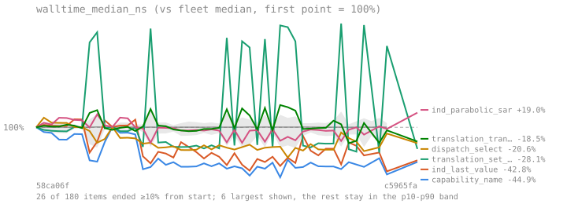
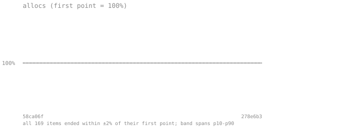

Performance summary#
Generated by
cargo soothfast report
| item | instructions | median | p99 | allocs | polls |
|---|---|---|---|---|---|
finance_query::bt_atr_sizing | 623501 | 66.78µs | 67.61µs | 164 | n/a |
finance_query::bt_base_to_htf_index | 321073 | 22.75µs | 29.41µs | 1 | n/a |
finance_query::bt_bayesian_search | 26008933 | 2.71ms | 2.81ms | 2382 | n/a |
finance_query::bt_fractional_kelly_sizing | 463514 | 45.67µs | 46.00µs | 88 | n/a |
finance_query::bt_grid_pareto | 12958315 | 667.08µs | 754.79µs | 2966 | n/a |
finance_query::bt_grid_search | 13001704 | 667.37µs | 706.36µs | 3012 | n/a |
finance_query::bt_leveraged_margin | 587828 | 55.55µs | 56.14µs | 158 | n/a |
finance_query::bt_monte_carlo | 1066513 | 178.39µs | 183.61µs | 6 | n/a |
finance_query::bt_resample | 1437804 | 109.68µs | 112.03µs | 11 | n/a |
finance_query::bt_sma_crossover | 9527607 | 942.69µs | 1.04ms | 2373 | n/a |
finance_query::bt_strategy_builder | 1050752 | 167.92µs | 179.89µs | 328 | n/a |
finance_query::capability_name | 26 | 1.5ns | 3.2ns | 0 | n/a |
finance_query::cond_bench_always_false | 250024 | 19.62µs | 20.68µs | 6 | n/a |
finance_query::cond_bench_always_true | 4051019 | 397.95µs | 419.98µs | 4045 | n/a |
finance_query::cond_bench_has_position | 4040036 | 408.35µs | 415.46µs | 4045 | n/a |
finance_query::cond_bench_held_for_bars | 1550139 | 160.52µs | 253.96µs | 1041 | n/a |
finance_query::cond_bench_in_loss | 4328088 | 419.62µs | 462.03µs | 4045 | n/a |
finance_query::cond_bench_in_profit | 546188 | 48.26µs | 48.77µs | 142 | n/a |
finance_query::cond_bench_is_long | 4281047 | 410.32µs | 422.01µs | 4045 | n/a |
finance_query::cond_bench_is_short | 397473 | 34.72µs | 35.73µs | 13 | n/a |
finance_query::cond_bench_no_position | 397473 | 34.69µs | 34.83µs | 13 | n/a |
finance_query::cond_bench_stop_loss | 450472 | 43.35µs | 44.63µs | 24 | n/a |
finance_query::cond_bench_take_profit | 439395 | 40.59µs | 41.12µs | 13 | n/a |
finance_query::cond_bench_trailing_stop | 583943 | 52.67µs | 54.96µs | 92 | n/a |
finance_query::cond_bench_trailing_take_profit | 584073 | 54.38µs | 55.21µs | 72 | n/a |
finance_query::de_chart | 106289 | 8.56µs | 9.57µs | 13 | n/a |
finance_query::de_crypto_coins | 333263 | 29.80µs | 30.86µs | 205 | n/a |
finance_query::de_currencies | 570830 | 48.25µs | 51.03µs | 647 | n/a |
finance_query::de_edgar_facts | 13451862 | 1.18ms | 1.20ms | 11899 | n/a |
finance_query::de_edgar_submissions | 5082103 | 400.56µs | 425.34µs | 6784 | n/a |
finance_query::de_fear_and_greed | 1394 | 106.3ns | 107.7ns | 0 | n/a |
finance_query::de_fear_and_greed_crypto_history | 15256 | 1.28µs | 1.30µs | 3 | n/a |
finance_query::de_financials | 222161 | 21.82µs | 22.67µs | 206 | n/a |
finance_query::de_fred_series | 1204753 | 98.72µs | 105.78µs | 873 | n/a |
finance_query::de_hours | 6538 | 585.5ns | 589.4ns | 10 | n/a |
finance_query::de_market_summary | 246403 | 26.07µs | 26.33µs | 228 | n/a |
finance_query::de_news | 36509 | 3.20µs | 3.40µs | 53 | n/a |
finance_query::de_options | 12324 | 1.03µs | 1.07µs | 6 | n/a |
finance_query::de_quote | 9203059 | 898.68µs | 969.17µs | 8235 | n/a |
finance_query::de_screener | 3859167 | 411.52µs | 420.00µs | 4498 | n/a |
finance_query::de_search | 51320 | 4.83µs | 4.93µs | 55 | n/a |
finance_query::de_treasury_yields | 763414 | 71.30µs | 73.04µs | 119 | n/a |
finance_query::de_trending | 14752 | 1.20µs | 1.22µs | 24 | n/a |
finance_query::dispatch_select | 71 | 3.4ns | 3.8ns | 0 | n/a |
finance_query::ind_accumulation_distribution | 27603 | 3.87µs | 3.93µs | 1 | n/a |
finance_query::ind_alma | 107543 | 6.46µs | 7.23µs | 2 | n/a |
finance_query::ind_aroon | 185005 | 12.39µs | 12.68µs | 9 | n/a |
finance_query::ind_atr | 56336 | 9.61µs | 10.26µs | 2 | n/a |
finance_query::ind_awesome_oscillator | 52217 | 8.54µs | 8.67µs | 4 | n/a |
finance_query::ind_balance_of_power | 27200 | 2.05µs | 2.20µs | 2 | n/a |
finance_query::ind_bull_bear_power | 29367 | 7.00µs | 7.13µs | 3 | n/a |
finance_query::ind_cci | 150043 | 17.39µs | 19.82µs | 2 | n/a |
finance_query::ind_chaikin_oscillator | 66624 | 15.92µs | 16.29µs | 4 | n/a |
finance_query::ind_choppiness_index | 272736 | 21.99µs | 22.66µs | 8 | n/a |
finance_query::ind_cmf | 49272 | 3.94µs | 3.96µs | 2 | n/a |
finance_query::ind_cmo | 61600 | 5.13µs | 5.24µs | 2 | n/a |
finance_query::ind_coppock_curve | 72521 | 7.65µs | 7.82µs | 3 | n/a |
finance_query::ind_dema | 40723 | 11.96µs | 12.05µs | 3 | n/a |
finance_query::ind_donchian_channels | 181300 | 11.74µs | 13.09µs | 9 | n/a |
finance_query::ind_elder_ray | 29368 | 7.03µs | 7.10µs | 3 | n/a |
finance_query::ind_fibonacci_pivot_points | 24494 | 2.44µs | 2.47µs | 1 | n/a |
finance_query::ind_fibonacci_retracement | 184691 | 11.73µs | 11.89µs | 9 | n/a |
finance_query::ind_heikin_ashi | 129126 | 16.20µs | 16.37µs | 9 | n/a |
finance_query::ind_hma | 99924 | 13.28µs | 13.84µs | 5 | n/a |
finance_query::ind_ichimoku | 532356 | 36.28µs | 37.44µs | 27 | n/a |
finance_query::ind_keltner_channels | 97155 | 17.04µs | 17.15µs | 5 | n/a |
finance_query::ind_last_value | 23 | 2.0ns | 2.2ns | 0 | n/a |
finance_query::ind_macd | 82093 | 20.31µs | 20.57µs | 7 | n/a |
finance_query::ind_mcginley_dynamic | 21645 | 12.04µs | 12.13µs | 1 | n/a |
finance_query::ind_mfi | 94016 | 7.53µs | 8.18µs | 3 | n/a |
finance_query::ind_momentum | 1183549 | 123.26µs | 131.58µs | 52 | n/a |
finance_query::ind_momentum_single | 7951 | 520.9ns | 543.1ns | 1 | n/a |
finance_query::ind_moving_averages | 477330 | 86.70µs | 88.04µs | 27 | n/a |
finance_query::ind_parabolic_sar | 25063 | 2.21µs | 2.28µs | 1 | n/a |
finance_query::ind_patterns | 1184420 | 98.04µs | 100.46µs | 1 | n/a |
finance_query::ind_pivot_points | 25989 | 2.88µs | 2.96µs | 1 | n/a |
finance_query::ind_roc | 16807 | 1.63µs | 1.66µs | 1 | n/a |
finance_query::ind_sma | 2200241 | 376.13µs | 380.89µs | 1 | n/a |
finance_query::ind_stochastic | 225478 | 15.98µs | 16.78µs | 11 | n/a |
finance_query::ind_stochastic_rsi | 287005 | 26.62µs | 27.27µs | 12 | n/a |
finance_query::ind_supertrend | 117648 | 13.44µs | 13.60µs | 4 | n/a |
finance_query::ind_tema | 57797 | 17.60µs | 17.87µs | 4 | n/a |
finance_query::ind_trend | 1029968 | 94.42µs | 109.44µs | 48 | n/a |
finance_query::ind_true_range | 17022 | 1.17µs | 1.20µs | 1 | n/a |
finance_query::ind_volatility | 664914 | 67.09µs | 71.44µs | 28 | n/a |
finance_query::ind_volume | 315416 | 40.95µs | 41.88µs | 14 | n/a |
finance_query::ind_vwap | 31602 | 3.85µs | 3.93µs | 1 | n/a |
finance_query::ind_vwma | 43549 | 2.69µs | 2.90µs | 1 | n/a |
finance_query::ind_williams_r | 180059 | 10.83µs | 11.27µs | 7 | n/a |
finance_query::ind_wma | 30722 | 4.42µs | 4.46µs | 7 | n/a |
finance_query::ind_zigzag | 18068 | 1.58µs | 1.62µs | 4 | n/a |
finance_query::ref_bench_accumulation_distribution | 574216 | 52.93µs | 53.65µs | 23 | n/a |
finance_query::ref_bench_adx | 5180090 | 501.15µs | 605.38µs | 4930 | n/a |
finance_query::ref_bench_alma | 5732303 | 558.75µs | 598.50µs | 5019 | n/a |
finance_query::ref_bench_aroon | 5580184 | 493.64µs | 535.08µs | 4950 | n/a |
finance_query::ref_bench_atr | 5452558 | 501.65µs | 507.33µs | 4996 | n/a |
finance_query::ref_bench_awesome_oscillator | 3220537 | 305.20µs | 320.68µs | 2636 | n/a |
finance_query::ref_bench_balance_of_power | 574845 | 51.42µs | 53.77µs | 25 | n/a |
finance_query::ref_bench_bear_power | 1490830 | 142.89µs | 144.30µs | 806 | n/a |
finance_query::ref_bench_bollinger | 5769360 | 543.92µs | 553.05µs | 4968 | n/a |
finance_query::ref_bench_bull_power | 5231042 | 491.19µs | 580.10µs | 4238 | n/a |
finance_query::ref_bench_candle_body | 254008 | 19.79µs | 20.47µs | 6 | n/a |
finance_query::ref_bench_candle_range | 4881517 | 468.79µs | 473.21µs | 5043 | n/a |
finance_query::ref_bench_cci | 3152749 | 303.22µs | 315.70µs | 2605 | n/a |
finance_query::ref_bench_chaikin_oscillator | 643148 | 68.66µs | 70.04µs | 26 | n/a |
finance_query::ref_bench_choppiness_index | 5730211 | 528.33µs | 568.04µs | 5002 | n/a |
finance_query::ref_bench_close | 4870294 | 461.87µs | 483.52µs | 5043 | n/a |
finance_query::ref_bench_cmf | 585008 | 50.91µs | 52.46µs | 25 | n/a |
finance_query::ref_bench_cmo | 3054686 | 289.27µs | 292.21µs | 2598 | n/a |
finance_query::ref_bench_coppock_curve | 3322923 | 308.44µs | 398.01µs | 2559 | n/a |
finance_query::ref_bench_dema | 5282256 | 493.46µs | 694.62µs | 4875 | n/a |
finance_query::ref_bench_donchian | 5963849 | 551.05µs | 582.05µs | 4976 | n/a |
finance_query::ref_bench_elder_bear_power | 1490290 | 143.56µs | 148.51µs | 806 | n/a |
finance_query::ref_bench_elder_bull_power | 5230075 | 488.99µs | 528.69µs | 4238 | n/a |
finance_query::ref_bench_ema | 5378149 | 494.47µs | 504.76µs | 4963 | n/a |
finance_query::ref_bench_gap_pct | 2658457 | 258.94µs | 262.83µs | 2489 | n/a |
finance_query::ref_bench_high | 4871320 | 470.89µs | 478.40µs | 5043 | n/a |
finance_query::ref_bench_hma | 5464302 | 501.21µs | 568.51µs | 4957 | n/a |
finance_query::ref_bench_htf | 6332617 | 587.23µs | 612.33µs | 7039 | n/a |
finance_query::ref_bench_htf_region | 6428903 | 587.73µs | 614.17µs | 7039 | n/a |
finance_query::ref_bench_ichimoku | 6198280 | 592.57µs | 608.51µs | 4836 | n/a |
finance_query::ref_bench_ichimoku_custom | 6198327 | 591.63µs | 633.94µs | 4836 | n/a |
finance_query::ref_bench_is_bearish | 255007 | 19.74µs | 19.79µs | 6 | n/a |
finance_query::ref_bench_is_bullish | 255007 | 19.75µs | 20.79µs | 6 | n/a |
finance_query::ref_bench_keltner | 5985477 | 557.51µs | 571.43µs | 4972 | n/a |
finance_query::ref_bench_low | 5083687 | 465.85µs | 477.85µs | 5043 | n/a |
finance_query::ref_bench_macd | 3225960 | 321.69µs | 324.76µs | 2541 | n/a |
finance_query::ref_bench_mcginley | 5422728 | 500.50µs | 538.29µs | 4963 | n/a |
finance_query::ref_bench_median_price | 4882515 | 468.98µs | 474.84µs | 5043 | n/a |
finance_query::ref_bench_mfi | 5503713 | 498.13µs | 535.71µs | 4998 | n/a |
finance_query::ref_bench_momentum | 2812425 | 284.09µs | 291.25µs | 2552 | n/a |
finance_query::ref_bench_obv | 627092 | 60.55µs | 60.78µs | 30 | n/a |
finance_query::ref_bench_open | 4871292 | 468.59µs | 474.53µs | 5043 | n/a |
finance_query::ref_bench_parabolic_sar | 5922940 | 547.33µs | 636.90µs | 5056 | n/a |
finance_query::ref_bench_price | 4870294 | 461.91µs | 498.48µs | 5043 | n/a |
finance_query::ref_bench_price_change_pct | 2888519 | 283.66µs | 297.84µs | 2489 | n/a |
finance_query::ref_bench_relative_volume | 5722579 | 524.03µs | 602.73µs | 4949 | n/a |
finance_query::ref_bench_roc | 3004655 | 286.42µs | 304.55µs | 2587 | n/a |
finance_query::ref_bench_rsi | 5136218 | 497.78µs | 507.40µs | 4994 | n/a |
finance_query::ref_bench_sma | 5382065 | 492.85µs | 502.44µs | 4963 | n/a |
finance_query::ref_bench_stochastic | 5886067 | 556.42µs | 675.79µs | 4987 | n/a |
finance_query::ref_bench_stochastic_rsi | 6031821 | 557.97µs | 602.41µs | 4831 | n/a |
finance_query::ref_bench_supertrend | 6069317 | 567.71µs | 575.20µs | 5021 | n/a |
finance_query::ref_bench_tema | 5029826 | 493.26µs | 506.87µs | 4781 | n/a |
finance_query::ref_bench_true_range | 5421977 | 501.72µs | 510.98µs | 5059 | n/a |
finance_query::ref_bench_typical_price | 5651916 | 516.54µs | 533.31µs | 5043 | n/a |
finance_query::ref_bench_volume | 4871292 | 474.05µs | 501.77µs | 5043 | n/a |
finance_query::ref_bench_vwap | 5381423 | 505.62µs | 512.33µs | 5060 | n/a |
finance_query::ref_bench_vwma | 5353351 | 493.47µs | 503.20µs | 4964 | n/a |
finance_query::ref_bench_williams_r | 743827 | 61.35µs | 74.05µs | 29 | n/a |
finance_query::ref_bench_wma | 5392343 | 492.65µs | 524.96µs | 4969 | n/a |
finance_query::risk_beta | 270426 | 61.07µs | 61.23µs | 0 | n/a |
finance_query::risk_calmar | 134 | 14.4ns | 15.0ns | 0 | n/a |
finance_query::risk_historical_cvar | 4313776 | 330.68µs | 344.82µs | 2 | n/a |
finance_query::risk_historical_var | 31047636 | 2.47ms | 2.54ms | 2 | n/a |
finance_query::risk_information_ratio | 145835 | 35.73µs | 36.35µs | 1 | n/a |
finance_query::risk_kelly_criterion | 30597 | 4.24µs | 4.26µs | 16 | n/a |
finance_query::risk_max_drawdown | 35063 | 7.99µs | 8.12µs | 1 | n/a |
finance_query::risk_omega_ratio | 143405 | 30.52µs | 30.67µs | 0 | n/a |
finance_query::risk_parametric_cvar | 100419 | 30.54µs | 30.76µs | 0 | n/a |
finance_query::risk_parametric_var | 100415 | 30.55µs | 30.69µs | 0 | n/a |
finance_query::risk_sharpe | 100409 | 30.56µs | 30.77µs | 0 | n/a |
finance_query::risk_sortino | 170039 | 30.55µs | 30.77µs | 0 | n/a |
finance_query::risk_tracking_error | 145832 | 36.06µs | 36.79µs | 1 | n/a |
finance_query::risk_ulcer_index | 619303 | 174.15µs | 174.71µs | 2 | n/a |
finance_query::risk_win_loss_stats | 389593 | 169.80µs | 171.78µs | 25 | n/a |
finance_query::rss_parse | 61327 | 6.17µs | 6.38µs | 48 | n/a |
finance_query::score_news | 847289 | 78.53µs | 83.48µs | 976 | n/a |
finance_query::score_transcript | 44429678 | 4.18ms | 4.29ms | 42100 | n/a |
finance_query::ser_currencies | 201829 | 15.68µs | 16.84µs | 8 | n/a |
finance_query::stream_deserialize | 14034 | 1.07µs | 1.08µs | 4 | n/a |
finance_query::stream_serialize | 11061 | 995.8ns | 1.00µs | 4 | n/a |
finance_query::ticker_chart_then_cached | 10816 | 1.22µs | 1.28µs | 20 | n/a |
finance_query::ticker_quote_polls | 222798 | 6.43µs | 6.74µs | 3 | 1 |
finance_query::ticker_quote_then_cached | 419863 | 10.12µs | 22.60µs | 4 | n/a |
finance_query::tickers_batch_quote_then_cached | 235180 | 8.82µs | 8.92µs | 16 | n/a |
finance_query::translate_dictionary | 15688 | 1.63µs | 1.77µs | 49 | n/a |
finance_query::translation_set_backend | 181 | 14.8ns | 15.7ns | 1 | n/a |
finance_query::translation_translate | 36231 | 2.84µs | 2.86µs | 79 | n/a |
finance_query::translation_translate_with | 35004 | 2.78µs | 2.89µs | 77 | n/a |



built with cargo soothfast docs build
source